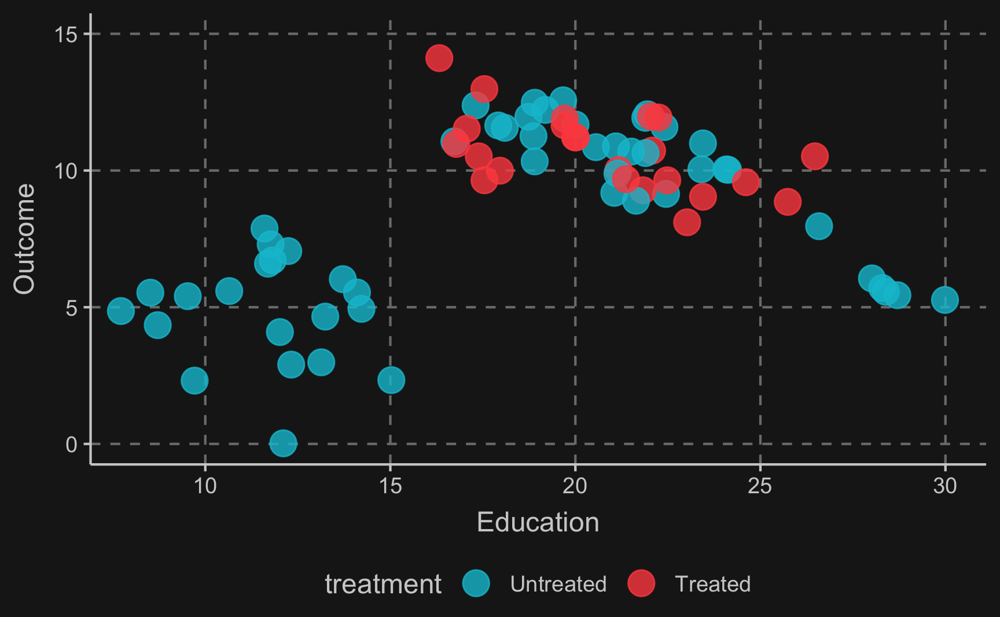
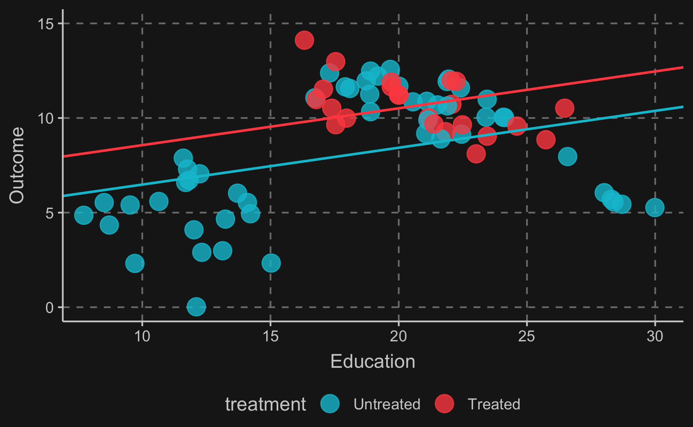
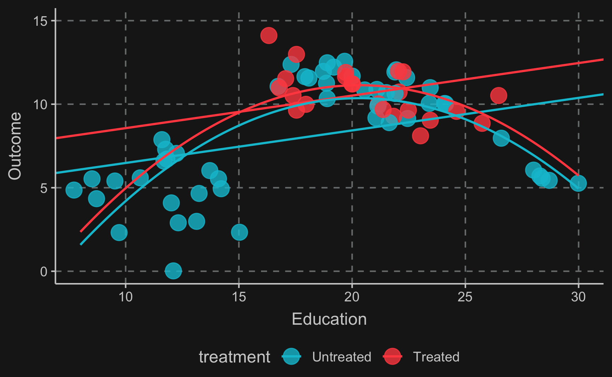
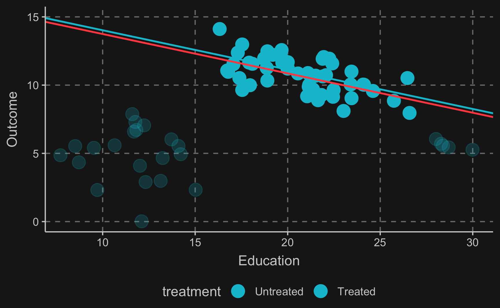
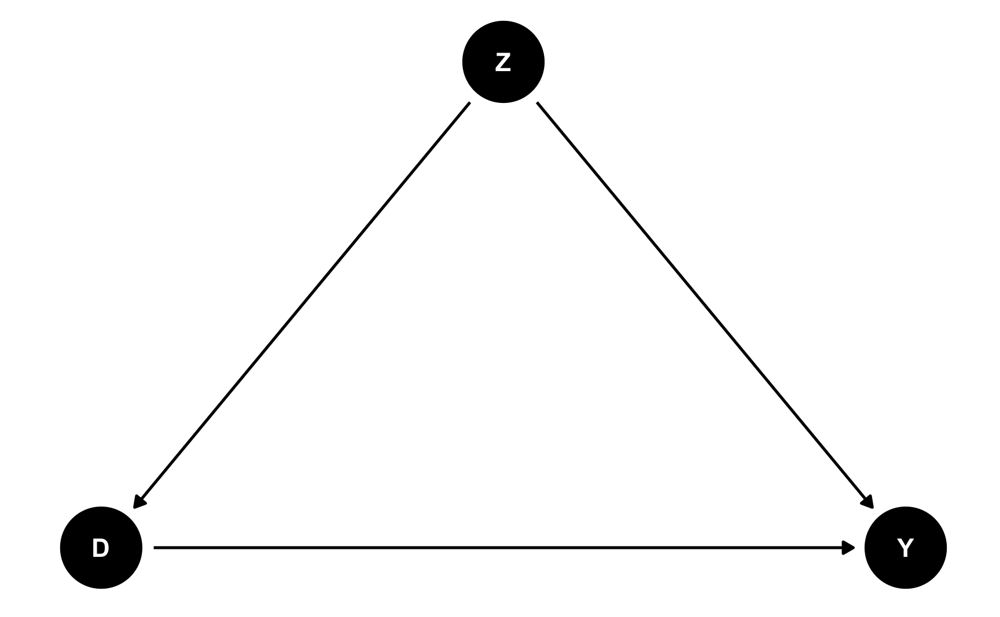
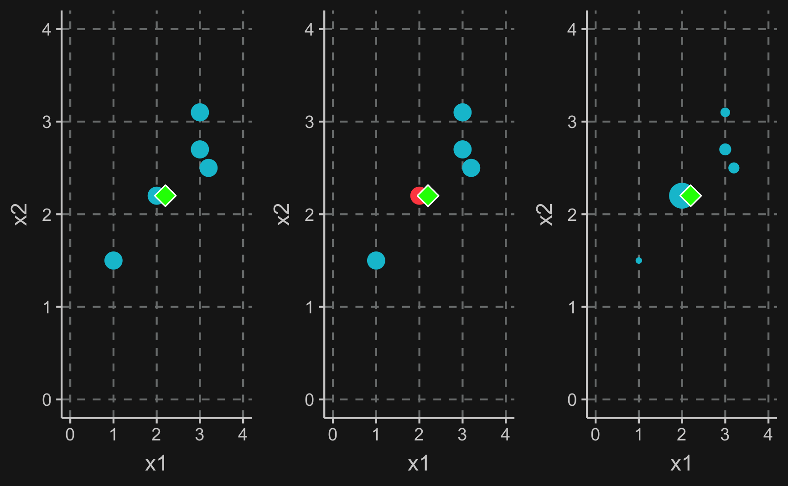
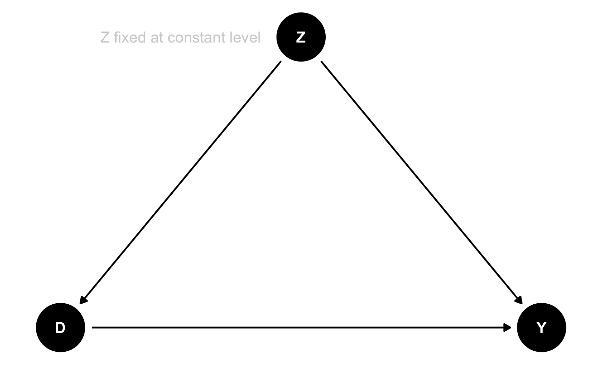
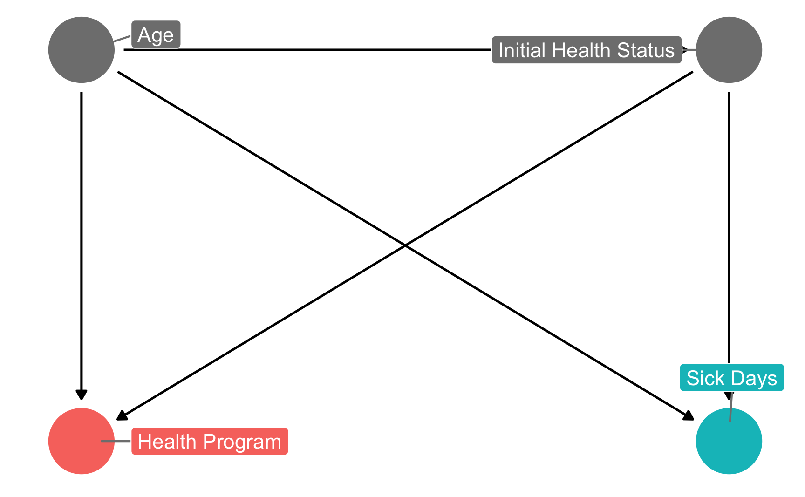
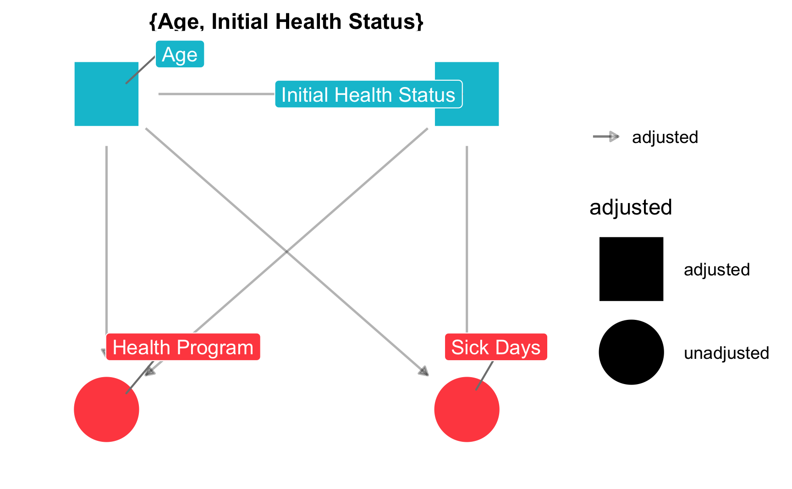
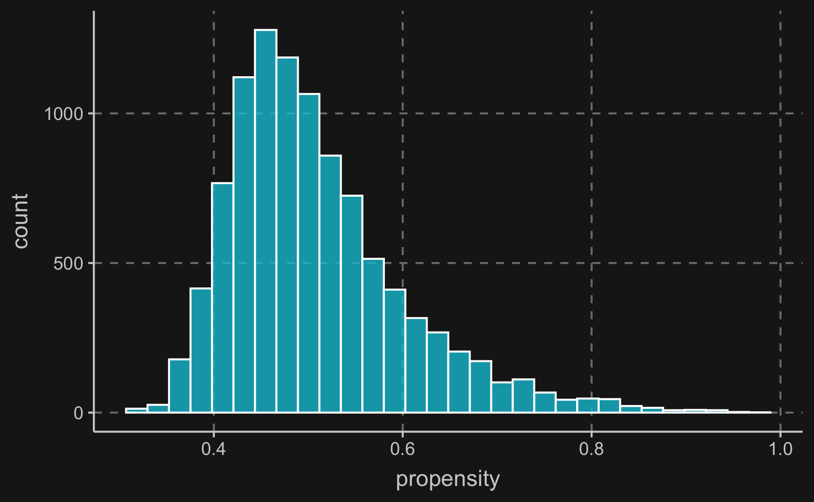

library(tidyverse)
library(ggdag)
library(dagitty)Matching and Subclassification
Problem
Almost always, the problem we are trying to solve in causal inference relates to the fundamental problem of causal inference, the fact that we cannot observe two states for one particular observation unit, e.g. we cannot see how a person’s health status changes after taking a specific drug and after not taking the same drug. Consequently, we cannot know the individual treatment effect.
Thus, we said we can make use of averages and try to estimate the average treatment effect by taking the difference between a group of treated observation units and a group of untreated observation units. Written in a formula, we can present it as
\[ ATE = E[Y(1)| D = 1] - E[Y(0) | D = 0] \]
Assuming that individuals (or other kinds of observation units) were randomly assigned for example to take the drug, then this result gives us exactly what we want. It compares the outcomes of groups under treatment with groups not under treatment.
But the estimate hinges on the assumption that both groups are comparable, formally \(E[Y(0)|D=0] = E[Y(1)|D=0]\), which we cannot test but in a randomized setting we have good reason to believe it to be true. Under these circumstances, average treatment effect (\(ATE\)) and the average treatment effect on the treated (\(ATT\)) are equal.
However, if there are in fact underlying group differences because the treatment assignment was not randomized and e.g. individuals were able to choose their treatment, we are not measuring the estimate that we are interested in. Then, the difference between \(ATE\) and \(ATT\) is what we call selection bias, an unmeasured factor representing systematic bias:
\[ ATE = ATT + \text{selection bias} \]
Graphically, we can show an example of when the naive estimate would fail.
By now, you might recognize what kind of problem the DAG depicts: confounding. A variable \(Z\) confounds the relationship between \(X\) and \(Y\) and to estimate the causal effect of \(X\) on \(Y\), we need to close the backdoor path of \(X\) to \(Y\) via \(Z\).
Intuition
One of the options to close it is matching, which covers any method attempting to equate or balance the distribution of covariates in treatment and control group. Simply put, the goal of matching is to compare apple to apples and post treatment make treatment and control group as similar as possible (of course, except for the treatment value).
In a way, matching is an alternative to using regression to close backdoors and neither is better or worse, in fact, they can even be combined. But for now, let us focus on matching and understand what it really it is, what kind of matching methods are popular and how they can be applied in R.
Let us assume you would like to study a phenomena and only have observational data that looks like this. \(Z\) is a covariate, \(Y\) is the outcome and the color of the data points shows if a unit has been treated or not. From the first glance you can already see that the data does not look as if you would expect in a randomized experiment. For values of \(Z\) in the middle range, there are both treated and untreated cases, but for values at the lower and upper range there are only untreated cases. That is an indication that \(Z\) confounds the relationship between \(D\) and \(Y\).
!!! Change text to application (education) or own example
# Observations both treated and control (mid education)
matched_stuff <- tibble(education = rnorm(50, 20, 3)) %>%
mutate(outcome = 15 + education * rnorm(n(), -0.2, 0.05),
treatment = as.logical(rbinom(n(), 1, 0.5)),
type = "Matched")
# Observations control (low education)
unmatched_stuff_low <- tibble(education = rnorm(20, 12, 2),
outcome = rnorm(20, 5, 2),
treatment = FALSE,
type = "Unmatched")
# Observations control (high education)
unmatched_stuff_high <- tibble(education = rnorm(5, 28, 1),
outcome = rnorm(5, 5, 0.5),
treatment = FALSE,
type = "Unmatched")
# All observations
all_data <- bind_rows(matched_stuff,
unmatched_stuff_low,
unmatched_stuff_high) %>%
mutate(treatment = factor(treatment,
labels = c("Untreated", "Treated")))
# Part of data that has matches (with factor treatment)
matched_stuff_real <- filter(all_data, type == "Matched")
# Wrong model
model_wrong <-
lm(outcome ~ education + treatment, data = all_data) %>%
broom::tidy()
# Wrong model with square term
model_wrong1 <- lm(outcome ~ education + treatment + I(education^2),
data = all_data)
model_wrong1_fitted <-
expand_grid(education = seq(8, 30, 0.1),
treatment = c("Treated", "Untreated")) %>%
broom::augment(model_wrong1, newdata = .)
# Better model
model_better <- lm(outcome ~ education + treatment, data = matched_stuff_real) %>%
broom::tidy()
# Better model with square term
model_better1 <- lm(outcome ~ education + treatment + I(education^2), data = matched_stuff_real)
model_better1_fitted <- expand_grid(education = seq(8, 30, 0.1),
treatment = c("Treated", "Untreated")) %>%
broom::augment(model_better1, newdata = .)
When we plot a line through all blue and red points, respectively and check the difference between the two lines, we see that there is substantial difference between both groups. This difference is what we would get when we run a regression on all points. It indicates a positive treatment effect.

However, the lines clearly don’t fit the data very well because there does not seem to be a linear relationship. To account for non-linearities, you can introduce e.g. square terms to the regression, here \(Z^2\). Then, the fit improves, in particular for the untreated data points. But what happened to the treatment effect? Now there is negative treatment effect smaller in magnitude than the previous positive treatment effect. We already see that the estimate is highly dependent on the choice of our particular model. This is why we should always put a lot of consideration into choosing the right model (which is not necessarily the one with the largest or desired treatment effect).

But let’s think about what we would have to do to adjust for the confounder \(Z\). Ideally, we would like to compare treated and control group in an area where both groups are present. So the lower and upper region should actually be left out. Only where there is overlap of both groups, we can compare apples with apples. Focusing only on this (somewhat arbitrary) data points and drawing the lines and curves for both specifications of the regression, we get another different result. Now it seems, that there is no effect at all.

So, how do we know what units to select, especially when there is more than one dimension? We will explore some techniques in the following sections but the short answer is: we need to create a balance for vales of all confounding variables treatment and control group, i.e. treatment and control group should be as similar as possible. And of course, we also need to assume, that all confounding variables are observed.
Subclassification Estimator
Although not often used in practice, the subclassification estimator is an intuitive way of thinking about matching comparable observations and thereby controlling for confounders.
Essentially, the subclassification estimator estimates local treatment effects withing small groups that share the same values for (confounding) covariates. Sometimes, values does not need to be the same but only similar, e.g. for continuous variables like age it is very unlikely to find another observation unit with the exact same birthday, so you would define e.g. a year. By only comparing observations in a small subgroup as defined by the covariates, conditional independence is ensured.
Imagine, that a treatment was not randomly assigned for women and men and sex also plays a role for the outcome as well. One imaginary example could be the effect of a trainee program on later salary that was advertised more heavily to women and therefore more women participated. And being a women might also have an impact on salary. Then, we have the situation of a confounding variable, sex, and to control for it, we estimate a treatment effect for women and a treatment effect for men and average the effects weighted by the respective subsample size.
To check how that affects the estimated treatment effect we can simulate some data according to the variable relationships.
confounder <- 'dag {
D [exposure,pos="0.000,0.000"]
Y [outcome,pos="2.000,0.000"]
Z [pos="1.000,1.000"]
Z -> D
Z -> Y
D -> Y
}'
ggdag(confounder) + theme_dag()
# number of observations
n <- 1e+3
# variables
Z <- rbernoulli(n, 0.5) # 0 => Male, 1 => Female
D <- rbernoulli(n, p = if_else(Z, 0.65, 0.35)) # 1 => Treat, 0 => Control
Y <- 0.2*D - 0.1*Z + rnorm(n, 5, 0.1) # => e.g. Salary
df <- tibble(
Z = Z,
D = D,
Y = Y
)\(Z\) is the confounder, \(D\) the treatment and \(Y\) is the outcome. As you can see both \(D\) and \(Y\) are related to \(Z\) and \(Y\) is influenced by both \(D\) and $Z$. But we are only interested in the effect of \(D\) on \(Z\) and want to isolate it. From the commands, we know that the true causal effect of \(D\) on \(Y\) is 0.2.
Let’s see what a naive comparison would return, where we would just compare average salary of the individuals who have participated in the trainee program are compared to the individuals who have not participated.
# Naive comparison
#broom::tidy(lm(Y ~ D, df))
E_0 <- mean(df[df$D==F, ]$Y)
E_1 <- mean(df[df$D==T, ]$Y)
E_1 - E_0[1] 0.16Due to confounding, the naive comparison cannot reconstruct our implemented treatment effect and is off. We should get closer if we account for confounding by taking averages treatment effects for men and women separately.
# Subclassification estimator (subclasses: Z = 0 and Z = 1)
# E(Z, D)
E_00 <- mean(df[(df$Z==F & df$D==F), ]$Y)
E_10 <- mean(df[(df$Z==T & df$D==F), ]$Y)
E_01 <- mean(df[(df$Z==F & df$D==T), ]$Y)
E_11 <- mean(df[(df$Z==T & df$D==T), ]$Y)
# Weighted by K
K <- mean(Z)
K*(E_11-E_10) + (1-K)*(E_01 - E_00)[1] 0.19And in fact, now we are really close to the true treatment effect. The remaining difference is caused by randomness in our sampling process.
This way, we have closed the backdoor and are able to retrieve the causal effect. However, note that the effect can only be causally interpreted, if sex is the only confounding variable. If there are more confounders, we have to build smaller groups that are defined by value combinations of all confounders, which will at some point lead groups that are extremely small or maybe even empty. This is called the curse of dimensionality and is one reason why the subclassification estimator is rarely used in practice.
Matching as a Concept
In general, the outcome of a matching method are weights for each observation based on one or several matching variables, for some matching methods the weights are either 0 or 1 but there are also a lot of methods that give weights between 0 and 1 to observations.
The matching variables need to cover the variables that can, when adjusted on, block all backdoor paths between our treatment variable and the outcome. Then, the treatment effect is computed as a weighted mean of the outcomes for the treatment and control group.
Matching methods can be classified into two main approaches: matching based on (1) distance and (2) matching based on propensity scores.
Distance: Observations are similar if they have similar covariates (or similar values for the matching variables). This approach minimizes the distance between observations in treatment and control group based on their covariate values.
Propensity: Observations are similar if they are equally likely to be treated, i.e. matching variables are used to compute how likely an observation is to be in treatment group, regardless whether it actually is in the treatment or control group.

We can now outline a structure for the general process of matching that applies to all methods.
First, it starts with some kind of preprocessing, which is a “manual” part, where you use all information about the causal mechanisms that you have. Essentially, it forces you to look at the DAG you can draw based on all your theoretical knowledge and thoughts, and particularly what you know about the treatment assignment. In observational studies, this will leave you with a sample that is different from your raw sample. In randomized studies, it might be the same as you do not have to for example close a backdoor path.
Then, using this preprocessed data you can build your model to estimate the treatment effect.
As already mentioned, another difference across methods is whether observations are compared to matches, which classify other observations as either in our out or compared to matched weighted samples, where each observation obtains a different weight depending on how close they are. For matches, you have to decide how many to include or what the worst acceptable match is while for matched weighted samples you need to decide how weights decay with distance.
Now, let’s look at some methods in detail.
Single Matching Variable
Probably the most simple method, though rarely applied in practice, is matching on a single variable. Its rare use in practice is due to the fact that matching on a single variable is only applicable if there is only one backdoor path that can be closed by this matching variable.
But for ease of explanation, we’ll have a look at it.
confounder <- 'dag {
D [exposure,pos="0.000,0.000"]
Y [outcome,pos="2.000,0.000"]
Z [pos="1.000,1.000"]
Z -> D
Z -> Y
D -> Y
}'
ggdag(confounder) +
annotate("text", x = 0.5, y = 1, label = "Z fixed at constant level") +
theme_dag()
!!! EXAMPLE:
credit card holders, monthly bills, repayment status (pay on time, delay payment) April - September
- being late April <- size of bill in April -> (Y) being late Sept
(Coarsened) Exact Matching
!!! pick one observation. define distance. single or multiple comparables.
We are trying to select observations in the control group that are similar to those in the treated group. To do so, we need to define what similar means. Here, we will say that similar observations are observations that share similar values for our matching variable (size of bill in April). By enforcing treatment and control group to have little variation in the matching variable, we close the backdoor. Only when the backdoor variable varies, it can induce changes in treatment and outcome and when we keep it at a certain level, the only effect from treatment to outcome is the direct effect.
How many? With our without replacement? Tradeoff between bias and variance (more matches, less variance and more bias) (Matching with replacement less bias because better matches and is not order-dependent)
one-to-one matching: selecting the best match
top \(k\) matching: k-nearest-neighbor matching
all “acceptable” matches: every match by some metric of acceptability (hard to define).
Matched weighted sample
Now we will move away from a an observation being in or out depending on whether it is a best match to some unit. Instead we use an alternate approach that works by looking at all control observations and checking how close they are to treated observations. An observation is neither in our out but receives a weight depending on its similarity to a treated observation. The closer a control observation is to a treatment observation, the higher its weight.
How to construct weights?
Kernel matching: kernel function takes difference and returns weight. Weight eventually gets to zero. Better matches obtain higher weights than less-good matches, bad matches obtain weight of zero. Different kinds of kernels.
Inverse probability weighting: specifically designed for use with propensity scores. Each observation is weighted by the inverse of the probability for its own treatment status. Simply put, atypical observations receive a high weight, so if you were actually treated which was unlikely based on your covariates, you receive a high weight.
!!! PLOT: One-to-one matching (color of controls) vs weight matching (size of controls)
Comparison: selecting matches more intuitive and easier to implement but more sensitive. weights to account for quality of matches
Application: Multiple Matching Variables
Let us imagine, you want to reduce the number of sick days in your company by implementing a health program that employees are free to participate in. By learning about how to improve their health, you expect your employees to call in sick less frequently.
Now you already see that the treatment, participation in the health program, is on a voluntary basis and therefore treatment assignment might be confounded by variables such as age and initial health status. Older and sicker people might be more interested to learn about techniques and procedures to improve their health and also might benefit more from the program. Also, initial health status might be affected by age.
We can use a DAG to think about the correct identification strategy.
# define DAG
dag_model <- 'dag {
bb="0,0,1,1"
"Health Program" [exposure,pos="0.25,0.2"]
"Initial Health Status" [pos="0.35,0.25"]
"Sick Days" [outcome,pos="0.35,0.2"]
Age [pos="0.25,0.25"]
"Initial Health Status" -> "Health Program"
"Initial Health Status" -> "Sick Days"
Age -> "Health Program"
Age -> "Initial Health Status"
Age -> "Sick Days"
}'
# Directed Acyclic Graph
ggdag_status(dag_model, text = FALSE, use_labels = "name") +
guides(color = "none") +
theme_dag()
# Directed Acyclic Graph with adjustment sets
ggdag_adjustment_set(dag_model, shadow = T, use_labels = "name", text = F) +
guides(color = "none") + # Turn off legend
theme_dag()
There are two backdoor paths that we need to close, initial health status and age.
adjustmentSets(dag_model){ Age, Initial Health Status }A naive estimate would be
# Naive estimation (not accounting for backdoors)
model_naive <- lm(sick_days ~ health_program, data = df)
broom::tidy(model_naive)# A tibble: 2 × 5
term estimate std.error statistic p.value
<chr> <dbl> <dbl> <dbl> <dbl>
1 (Intercept) 7.26 0.0331 219. 0
2 health_programTRUE 1.25 0.0465 26.9 2.30e-154which is different from the !!! TRUE TREATMENT EFFECT.
(Coarsened) Exact Matching
It is not difficult to extend the approaches defined above to multiple matching variables. Regarding the “selecting matches” approach, multiple variables are used for the computations instead of a single. Again, in case of exact matching, only observations that share the same values are matched in.
To perform Coarsened Exact Matching (CEM) you can use the MatchIt package in R. If you do not specify how to coarsen the data, it will be done automatically based on an algorithm.
library(MatchIt)
# Without specifying coarsening
# (1) Matching
cem <- matchit(health_program ~ age + sick_days_before,
data = df,
method = 'cem',
estimand = 'ATE')
# Covariate balance
summary(cem)
Call:
matchit(formula = health_program ~ age + sick_days_before, data = df,
method = "cem", estimand = "ATE")
Summary of Balance for All Data:
Means Treated Means Control Std. Mean Diff. Var. Ratio eCDF Mean eCDF Max
age 46.4 44.6 0.18 0.99 0.054 0.087
sick_days_before 4.2 3.5 0.36 1.39 0.033 0.183
Summary of Balance for Matched Data:
Means Treated Means Control Std. Mean Diff. Var. Ratio eCDF Mean eCDF Max Std. Pair Dist.
age 45.6 45.5 0.001 1.00 0.002 0.009 0.10
sick_days_before 3.8 3.8 0.021 0.97 0.002 0.042 0.22
Sample Sizes:
Control Treated
All 4918 5082
Matched (ESS) 4600 4825
Matched 4914 5046
Unmatched 4 36
Discarded 0 0We are already closer to our true treatment effect.
df_cem <- match.data(cem)
# (2) Estimation
model_cem <- lm(sick_days ~ health_program, data = df_cem, weights = weights)
broom::tidy(model_cem)# A tibble: 2 × 5
term estimate std.error statistic p.value
<chr> <dbl> <dbl> <dbl> <dbl>
1 (Intercept) 7.60 0.0325 234. 0
2 health_programTRUE 0.522 0.0457 11.4 5.16e-30We can also provide values to coarsen the data in order to control for the number of subsamples. Again, we also check the balance.
# Custom coarsening
# (1) Matching
cutpoints <- list(age = seq(25, 65, 15), sick_days_before = seq(3, 22, 5))
cem_coars <- matchit(health_program ~ age + sick_days_before,
data = df,
method = 'cem',
estimand = 'ATE',
cutpoints = cutpoints)
# Covariate balance
summary(cem_coars)
Call:
matchit(formula = health_program ~ age + sick_days_before, data = df,
method = "cem", estimand = "ATE", cutpoints = cutpoints)
Summary of Balance for All Data:
Means Treated Means Control Std. Mean Diff. Var. Ratio eCDF Mean eCDF Max
age 46.4 44.6 0.18 0.99 0.054 0.087
sick_days_before 4.2 3.5 0.36 1.39 0.033 0.183
Summary of Balance for Matched Data:
Means Treated Means Control Std. Mean Diff. Var. Ratio eCDF Mean eCDF Max Std. Pair Dist.
age 45.6 45.4 0.025 1.0 0.008 0.025 0.48
sick_days_before 3.9 3.7 0.124 1.1 0.012 0.094 0.58
Sample Sizes:
Control Treated
All 4918 5082
Matched (ESS) 4762 4926
Matched 4916 5080
Unmatched 2 2
Discarded 0 0We can also visualize the subsamples and see how data points are weighted.
df_cem_coars <- match.data(cem_coars)
# Plot grid
ggplot(df_cem_coars, aes(x = age, y = sick_days_before,
size = weights, color = as.factor(health_program))) +
geom_point(alpha = .2) +
geom_abline(data.frame(y = cutpoints$sick_days_before),
mapping = aes(intercept = y, slope = 0)) +
geom_vline(data.frame(y = cutpoints$age),
mapping = aes(xintercept = y)) +
theme(legend.position = "none")
Now, with fewer subsamples, the estimate is worse. It seems, the backdoors are not properly closed.
# (2) Estimation
model_cem_coars <- lm(sick_days ~ health_program, data = df_cem_coars,
weights = weights)
broom::tidy(model_cem_coars)# A tibble: 2 × 5
term estimate std.error statistic p.value
<chr> <dbl> <dbl> <dbl> <dbl>
1 (Intercept) 7.52 0.0334 225. 0
2 health_programTRUE 0.730 0.0468 15.6 2.94e-54Nearest-Neighbor matching
For nearest neighbor matching, the difference between two observations based on multiple variables is computed and reduced to a scalar. One of the most popular techniques used to find so called “nearest neighbors” is the euclidean distance.
We just have to change a few arguments and decide to use the Mahalanobis distance. Then, we check how similar treatment and control group are after matching.
# (1) Matching
# replace: one-to-one or one-to-many matching
nn <- matchit(health_program ~ age + sick_days_before,
data = df,
method = "nearest",
distance = "mahalanobis",
replace = T)
# Covariate Balance
summary(nn)
Call:
matchit(formula = health_program ~ age + sick_days_before, data = df,
method = "nearest", distance = "mahalanobis", replace = T)
Summary of Balance for All Data:
Means Treated Means Control Std. Mean Diff. Var. Ratio eCDF Mean eCDF Max
age 46.4 44.6 0.18 0.99 0.054 0.087
sick_days_before 4.2 3.5 0.33 1.39 0.033 0.183
Summary of Balance for Matched Data:
Means Treated Means Control Std. Mean Diff. Var. Ratio eCDF Mean eCDF Max Std. Pair Dist.
age 46.4 46.4 -0.001 1 0.001 0.005 0.009
sick_days_before 4.2 4.2 0.001 1 0.000 0.000 0.002
Sample Sizes:
Control Treated
All 4918 5082
Matched (ESS) 1783 5082
Matched 2693 5082
Unmatched 2225 0
Discarded 0 0This method also brings us closer to the true treatment effect.
df_nn <- match.data(nn)
# (2) Estimation
model_nn <- lm(sick_days ~ health_program, data = df_nn, weights = weights)
broom::tidy(model_nn)# A tibble: 2 × 5
term estimate std.error statistic p.value
<chr> <dbl> <dbl> <dbl> <dbl>
1 (Intercept) 8.00 0.0472 169. 0
2 health_programTRUE 0.510 0.0584 8.72 3.28e-18Curse of dimensionality
With exact matching and nearest-neighbor matching you quickly run into the curse of dimensionality as your number of covariates grows. If you want to find matches based on very few dimensions, you are way more likely to find them as opposed to matches on a high number of dimensions, where it is very likely that you actually don’t find any matches at all.
Regarding exact matching, consider for example the situation with two covariates with each five different values. Then any observations will fall into one of 25 different cells that are given by the covariate value grid. And now imagine ten covariates with three different values: it already creates ~60k cells, which increases the likelihood of a cell being populated by only one or zero observations substantially. Then, estimation of treatment effects is not possible for many of the observations.
Nearest-neighbor matching is similarly affected by the curse of dimensionality. The more covariates you include, the less likely you are to find a good match. A quick solution, leaving out some covariates, can only be done if you are sure to not throw out any confounders.
Inverse Probability weighting
One way to deal with the curse of dimensionality is to use inverse probability weighting (IPW). We already mentioned it above, but let’s go into more detail.
We start by understanding what “probability” in inverse probability means. It is the predicted probability of treatment assignment based on the matching variables. So staying in the health program example, we use age and initial health status to predict how likely an employee is to participate in the health program. What we expect is that older and initially more sick people are more likely to participate opposed to younger and healthy people. To model this relationship, we could use for example logistic regression, a regression that predicts an outcome between zero and one. But you are also free to use any classification model that is out there, as here we are not only interested in explaining effects but only in obtaining the probability of treatment, also known as “propensity score”.
Here, we will use a logistic regression:
# (1) Propensity scores
model_prop <- glm(health_program ~ age + sick_days_before,
data = df,
family = binomial(link = "logit"))
broom::tidy(model_prop)# A tibble: 3 × 5
term estimate std.error statistic p.value
<chr> <dbl> <dbl> <dbl> <dbl>
1 (Intercept) -1.20 0.0997 -12.0 2.15e-33
2 age 0.0120 0.00210 5.69 1.27e- 8
3 sick_days_before 0.183 0.0116 15.7 7.89e-56# Add propensities to table
df_aug <- broom::augment_columns(
model_prop,
df,
type.predict = "response") %>%
rename(propensity = .fitted)# Plot histogram of estimated propensities
ggplot(df_aug, aes(x = propensity)) +
geom_histogram(alpha = .8, color = "white")`stat_bin()` using `bins = 30`. Pick better value with `binwidth`.
Having obtained the propensity score, you could again measure distances like described above and select matches. In fact, that is widely used matching method, known as propensity score matching. However, there are several reasons why this is not a good identification strategy1, mainly, because same propensity score does not imply that observations have the same covariate values and this could actually increase the imbalance. Note, however, that same covariate values indeed imply the same propensity score.
Instead inverse probability has proven to be a more precise method, particularly when the sample is large enough. So what do we do with the probability/propensity scores in IPW? We use propensity score of an observation unit to in- or decrease its weights and thereby make some observations more important than others. The weight obtains as
\[ w_i = \frac{D_i}{\pi_i} + \frac{(1-D_i)}{(1-\pi_i)} \]
where only one of the terms is always active as \(D_i\) is either one or zero. Now we should better understand what “inverse probability weighting” actually means. It weights each observation by its inverse of its treatment probability.
df_ipw <- df_aug %>% mutate(
ipw = (health_program/propensity) + ((1-health_program) / (1-propensity)))
df_ipw %>%
select(health_program, age, sick_days_before, propensity, ipw)# A tibble: 10,000 × 5
health_program age sick_days_before propensity ipw
<lgl> <dbl> <dbl> <dbl> <dbl>
1 FALSE 42.5 4 0.510 2.04
2 FALSE 48.8 6 0.618 2.62
3 FALSE 27.0 3 0.419 1.72
4 FALSE 34.9 3 0.442 1.79
5 FALSE 40.4 4 0.504 2.02
6 TRUE 48.7 3 0.483 2.07
7 FALSE 45.8 3 0.474 1.90
8 FALSE 60.0 3 0.517 2.07
9 FALSE 50.8 4 0.535 2.15
10 FALSE 48.1 3 0.481 1.93
# … with 9,990 more rowsImagine a case of an old employee with a very bad initial health status who chose to participate in the health program, i.e. \(D_i=1\). Based on his/her covariates, it was very likely that he choose to participate and consequently, his propensity score will be rather high, let’s assume it was 0.8, for demonstration. Then his/her weight would equal \(w_i = \frac{1}{0.8} = 1.25\).
Compared to that, what weight would a young and healthy person that choose to participate in the program obtain? Let’s say his/her probability of participating would be 0.2. Then, his/her weight would be \(w_i = \frac{1}{0.2} = 5\). So we see, he/she would obtain a significantly higher weight.
In general, IPW weights atypical observations, like a young and healthy person deciding to participate, higher than typical observations. The same applies for both treatment and control group. If you want, you can check it out yourself.
# (2) Estimation
model_ipw <- lm(sick_days ~ health_program,
data = df_ipw,
weights = ipw)
broom::tidy(model_ipw)# A tibble: 2 × 5
term estimate std.error statistic p.value
<chr> <dbl> <dbl> <dbl> <dbl>
1 (Intercept) 7.85 0.0367 214. 0
2 health_programTRUE 0.308 0.0521 5.92 0.00000000341Some propensity values are very extreme and therefore obtain an extreme weight. We should probably filter them out to improve our estimate.
df_ipw %>%
select(health_program, age, sick_days_before, propensity, ipw) %>%
arrange(desc(ipw))# A tibble: 10,000 × 5
health_program age sick_days_before propensity ipw
<lgl> <dbl> <dbl> <dbl> <dbl>
1 FALSE 61.4 19 0.953 21.3
2 FALSE 45.6 18 0.933 15.0
3 FALSE 57.7 17 0.931 14.5
4 FALSE 62.7 16 0.923 12.9
5 FALSE 45.9 17 0.921 12.7
6 FALSE 56.4 16 0.917 12.0
7 FALSE 59.5 15 0.905 10.5
8 FALSE 59.0 15 0.905 10.5
9 FALSE 57.0 15 0.903 10.3
10 FALSE 41.3 15 0.885 8.68
# … with 9,990 more rowsmodel_ipw_trim <- lm(sick_days ~ health_program,
data = df_ipw %>% filter(propensity %>% between(0.15, 0.85)),
weights = ipw)
broom::tidy(model_ipw_trim)# A tibble: 2 × 5
term estimate std.error statistic p.value
<chr> <dbl> <dbl> <dbl> <dbl>
1 (Intercept) 7.63 0.0323 236. 0
2 health_programTRUE 0.492 0.0457 10.8 8.16e-27Opposed to other methods, IPW, which is specifically designed for use with propensity scores, allows us to use all data in terms of number of observations and dimensions and the only decision we need to take is how to estimate the propensity score. It is important to note that the model does not need to predict as accurate as possible but it is more crucial that it accounts for all confounders.
Comparison
You see, that there many ways backdoors can be closed.
modelsummary::modelsummary(list("Naive" = model_naive,
#"All" = model_adj,
"CEM1" = model_cem,
"CEM2" = model_cem_coars,
"NN" = model_nn,
"IPW1" = model_ipw,
"IPW2" = model_ipw_trim))| Naive | CEM1 | CEM2 | NN | IPW1 | IPW2 | |
|---|---|---|---|---|---|---|
| (Intercept) | 7.260 | 7.603 | 7.517 | 8.003 | 7.853 | 7.633 |
| (0.033) | (0.033) | (0.033) | (0.047) | (0.037) | (0.032) | |
| health_programTRUE | 1.252 | 0.522 | 0.730 | 0.510 | 0.308 | 0.492 |
| (0.046) | (0.046) | (0.047) | (0.058) | (0.052) | (0.046) | |
| Num.Obs. | 10000 | 9960 | 9996 | 7775 | 10000 | 9956 |
| R2 | 0.068 | 0.013 | 0.024 | 0.010 | 0.003 | 0.011 |
| R2 Adj. | 0.068 | 0.013 | 0.024 | 0.010 | 0.003 | 0.011 |
| AIC | 45249.3 | 44933.4 | 45510.1 | 36480.9 | 47740.0 | 44855.3 |
| BIC | 45270.9 | 44955.0 | 45531.8 | 36501.7 | 47761.6 | 44876.9 |
| Log.Lik. | −22621.658 | −22463.706 | −22752.070 | −18237.432 | −23866.986 | −22424.643 |
| F | 725.685 | 130.395 | 243.514 | 76.090 | 34.994 | 115.600 |
| RMSE | 2.32 | 2.28 | 2.34 | 2.45 | 3.69 | 3.22 |
Assumptions
To obtain valid estimates with any matching estimator, we still need to fulfill some assumptions. Most important are the following:
Conditional Independence: all backdoors needs to be closed so it has to be ensured that all confounders are in the set of matching variables.
Common Support: for treated units, there need to exist appropriate control units. Without a substantial overlap in the distribution of matching variables or the propensity score, estimating causal effects is impossible.
Parts of these assumptions can be checked by looking at the balance of covariates. Useful metrics include summary statistics including means, standard deviations, difference-of-means test etc.
!!! Show raw balance and matched balance (Matching::MatchBalance or vtable::sujmtable)
If the degree balance is not satisfactory, you can change parameters of your matching method and do a new iteration until you are confident to have a good balance between treatment and control.
Having fulfilled the necessary assumptions allows the valid estimation of a treatment. It is interesting to note that, depending on what method you chose, a different kind of treatment effect is estimated. Most of the methods start with having a treated unit and search for matches (selecting or weighting) across the control units, which will return the average treatment effect on the treated, \(ATT\). By the same logic, these methods can also yield the average treatment effect on the untreated, \(ATU\).
Then, the average treatment effect can be estimated by
\[ ATE = p*ATT + (1-p)*ATU \]
In case of IPW, \(ATE\) is computed directly, as it changes the weights of units from both groups.
Conclusion
Matching methods are a very active research field and even thinking about the correct way to choose parameters in those methods offers a wide range of questions that there is no definite answer to. To some degree, choosing matching parameters is arbitrary. A benefit, however, is that after matching model dependence is reduced when using simple techniques like weighted means.
But how does it compare to using a simple linear regression? In one of the previous chapters, we said that closing back doors can also be achieved by including confounders into the regression equation. One difference is that when using regression, the \(ATE\) points in direction where covariates have more variance, i.e. when there is a higher treatment variance for older people for example, they obtain a higher weight as compared to the matching approach. Another difference is that a regression hinges on the assumption of linearity, which we do not need to assume in matching approaches.
Assignment
Imagine, the following situation. You are running an online store and you one year ago, you introduced a plus membership to bind customers to your store and increase revenue. The plus memberships comes at a small cost for the customers, which is why not all of the customers subscribed.
Load the data, look at the variables and draw a DAG that you think shows the situation best. Then, compute
a naive estimate
an estimate using coarsened exact matching (custom or default)
an estimate using nearest-neighbor matching
an estimate using inverse probability weighting
and compare the results. Argue what estimates can be causally interpreted.